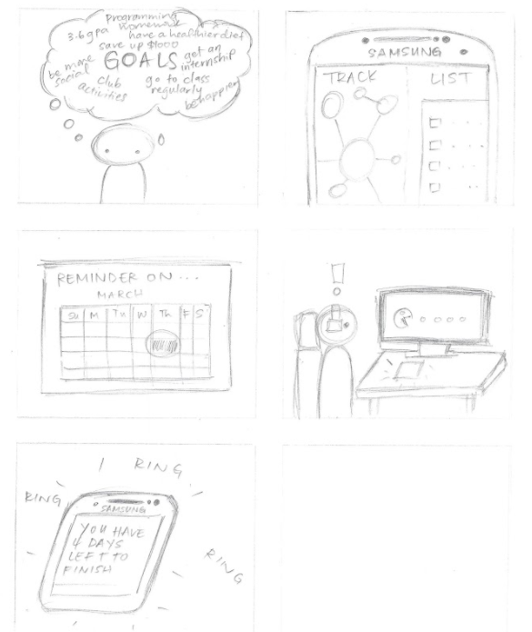

A quarter-long user-centered design project meant to give us hands-on experience with a multitude of HCI Design techniques within a team of five students.
Disclaimer: The following details came from the final report that was turned in, with minor additions added for clarity and the addition of the notable contributions and lessons learned sections.
Before deciding on the problem that we wanted to solve for this project, each of the members of our team were assigned the task of individually conducting exploratoy user research related to the topic area of productivity and efficiency. The approaches that were used included the following: exploratory observations, interviews, and the use of cultural probes.
These practices were used to help us identify problems that individuals were having within our topic area. The observations allowed us to make notes of how people made use of technology in the context of our area. The interviews allowed us to dig deeper into what fueled the actions of individuals and to practice using different types of questions, such as Grand-Tour and Native Language questions, in order to understand the daily habits of various types of people. To supplement this research, a cultural probe was deployed in order to gain more insight on the topic, and also to gather physical exhibits from those participating in the probe for later examination.


Lessons Learned
-
Determine which observation technique makes the most sense for the type of problem that you are solving. In my case, I found the “fly on the wall” technique as being counter-productive since it was hard to determine what everyone was doing and whether they were really being productive with their time.
-
Make interview questions more general or have alternate groups of questions that depend on how an interview is going. By doing this, it will guard against having to cut an interview short because of a shortage of applicable questions.
Once we had finished conducting this research, we came together to make sense of all of the data that we had collected. In order to help us categorize everything, we made use of an affinity diagram, which allowed us to find the best hierarchy to describe our data. We first wrote our findings on post-it notes, and then distributed them according to common themes we saw between the findings.
Then, we re-examined our findings based on their distribution and the themes we extracted from the initial examination, from which we found even higher-level concepts that we used to separate the findings, until we achieved four layers of depth for the affinity diagram and we concluded our examination (also due to time constraints). Additionally, we also made use of a thematic diagram, which allowed us to come up with the common themes within our data. After constructing these two diagrams to describe our data, we finally chose the problem that we would solve. We decided to solve the problem of students being distracted by technology. Based on our data, we felt that this was a problem that many students currently face and it commonly leads to bad habits, such as procrastination.
In order to help us paint a better picture of our audience, we created two personas. The first persona is a college student in the middle of his second year that has a lot on his plate. However, even though he has a great habit of making use of Google Calendar to schedule all of his tasks and so on, he always succumbs to distracting websites like YouTube and StumbleUpon. The second persona is an older student who is currently studying at a community college after leaving the military. Even though he has found technology to be very helpful in planning his schedule and determining what needs to be done each day, he has found himself wasting time on Facebook and Twitter. As can be seen, both of these individuals are falling victim to the problem that we chose.

Notable Contributions
-
Redirected the team when I noticed that the initial personas didn’t reflect our chosen design problem
-
Constructed the second persona and led that changes to the first one in order to make it match more closely with our chosen design problem
Lesson Learned
-
When it comes to the thematic diagram, taking a bottom-up approach and brainstorming the common themes in all of your data is better than taking a top-down approach that starts with a global theme that is based on your given problem. When we did the latter, we realized that we were limiting how we were constructing the themes from our data.
Once we had our problem and knew our audience a bit better, we then started to brainstorm the needs and requirements of a plausible design solution. We asked ourselves what would our users need / require in order to help them not be distracted by technology. The four user needs that we ultimately went with were the following: staying on task, goal-oriented focus, mobile / cross-platform, and the system must be straight-forward and easy to use.
The next phase was to brainstorm numerous design solutions that met our audience’s needs. Out of these solutions, we chose three ideas that we identified as being the best among them. These ideas included the following: an app that would allow you to visualize your long-term goals and objectives and what you have completed so far in your life in order to motivate you to give your all on what you are doing now, a web/mobile app that
locks out apps/websites that users deem as being distracting, and a planner app that would
automatically break down what you should do every day based on previously given time estimates and due dates.
In order to give us a better idea of the key user cases of these design alternatives, we created two storyboards for each one. After the storyboards were complete, we deliberated on what would ultimately become our final design solution. We chose to combine the planner and app blocker design alternatives since we noticed that they would complement each other really well, especially when paired with a work-period scheduling component. So, when these three components are combined, the user would be blocked from distracting media during their chosen work periods and they would be able to complete the daily tasks that are given to them during those periods.
Notable Contributions
-
Proposed a design solution that ended up being one of the final design solution alternatives
-
Wrote the summary that described the three design solution alternatives that we would pursue, our rationale for choosing them, and how they satisfied our key user needs and requirements
-
Wrote the explanation that described our final design solution and why we chose it
Lessons Learned
-
You can broaden your view on possible solutions if you ask individuals outside the design team.
-
If it makes sense, combining design solution alternatives may be the best way to produce the best possible solution.

After we had chosen our design solution, which we called Stay on Track, it was time to put some prototypes together. Since one of our chosen requirements was to make it cross-platform, we created paper prototypes for both the mobile and web version of our design solution. In order to not duplicate our work, we decided to have the prototype for the web version showcase what the user would see when the user first starts using the app whereas the mobile version would showcase what the app would look like after being used for some time.
Once this task was completed, we started to evaluate our solution. We used the following techniques: heuristic evaluations, a cognitive walkthrough, and think aloud exercises. Based on the results of all of our evaluations, we found that our design led to both positive and negative results. On the positive side, the evaluators of our prototype found the workflow to be pretty straight-forward. On the negative side, the main issues were a lack of documentation and some functionality that wasn’t completely understandable. If we had more time to work on this project, we would add more documentation and gather more feedback in order to determine what areas should be improved.
View All Paper Prototypes →
Notable Contributions
-
Constructed the mobile version’s paper prototype
-
Wrote the summary that described the prototyping tools we chose and why, in addition to a reflection of our experience creating and testing our prototypes
-
Guidance and task delegation
Lesson Learned
-
If you don’t want to overload the users of your prototype, don’t show more than one view at a time.
Stay on Track is a cross-platform productivity app that helps users be more productive with their time.
Included Features
-
Daily Objectives: Generate daily objectives based on previously given task specifications, such as duration and personal estimates
-
Gantt Chart View: View your task completion schedule in a Gantt Chart-like format
-
Schedule View: Sync with Google Calendar and view your personal schedule
-
Work Period Scheduling: Designate work periods on your schedule in order to determine when you shouldn’t use distracting media
-
Blocker: Block yourself from distracting websites and mobile apps during your work periods and additional periods of time
-
Task Manager: Add and manage the tasks that will be used to generate your daily objectives
© Joshwin Greene 2017